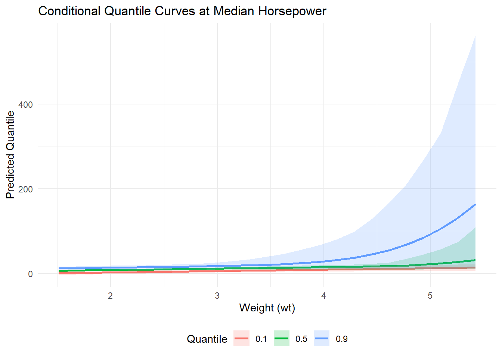

library(DPmixGPD)
data("mtcars", package = "datasets")
df <- mtcars
y <- df$mpg
X <- df[, c("wt", "hp")]
X <- as.data.frame(X)Conditional Models
Overview
This vignette demonstrates fitting a conditional model with covariates and generating predictions on a grid of new covariate values.
Theory (brief)
Conditional models allow the bulk mixture parameters to vary with covariates. We write the conditional density as \[ f(y_i \mid x_i) = \int K(y_i; \theta(x_i))\, dG(\theta), \] where the link between \(\theta\) and \(x_i\) is encoded through the kernel-specific regression structure. The DP prior provides flexible, data-driven clustering of local distributions across covariate space.
Data Setup
Model Fitting
bundle <- build_nimble_bundle(
y = y,
X = X,
backend = "sb",
kernel = "normal",
GPD = TRUE,
components = 6,
mcmc = mcmc
)
fit <- run_mcmc_bundle_manual(bundle, show_progress = FALSE)Defining model [Note] Registering 'dNormGpd' as a distribution based on its use in BUGS code. If you make changes to the nimbleFunctions for the distribution, you must call 'deregisterDistributions' before using the distribution in BUGS code for those changes to take effect.Building modelSetting data and initial valuesChecking model sizes and dimensions [Note] This model is not fully initialized. This is not an error.
To see which variables are not initialized, use model$initializeInfo().
For more information on model initialization, see help(modelInitialization).Checking model calculationsCompiling
[Note] This may take a minute.
[Note] Use 'showCompilerOutput = TRUE' to see C++ compilation details.
Compiling
[Note] This may take a minute.
[Note] Use 'showCompilerOutput = TRUE' to see C++ compilation details. [Warning] To calculate WAIC, set 'WAIC = TRUE', in addition to having enabled WAIC in building the MCMC.running chain 1...Compiling
[Note] This may take a minute.
[Note] Use 'showCompilerOutput = TRUE' to see C++ compilation details.Calculating WAIC.Fitted Values
f <- fitted(fit, type = "mean", level = 0.90)
head(f) fit lower upper residuals
1 10.10 6.73 13.7 10.90
2 11.06 6.99 15.8 9.94
3 8.75 5.76 11.8 14.05
4 12.77 7.05 19.8 8.63
5 14.31 9.89 21.5 4.39
6 14.09 7.15 24.0 4.01summary(f$residuals) Min. 1st Qu. Median Mean 3rd Qu. Max.
-57.624 0.345 4.742 3.038 12.092 27.073 Predictions on New Data
new_X <- data.frame(
wt = seq(min(X$wt), max(X$wt), length.out = 25),
hp = stats::median(X$hp)
)
pred_mean <- predict(fit, x = new_X, type = "mean", cred.level = 0.90, interval = "credible")
pred_med <- predict(fit, x = new_X, type = "median", cred.level = 0.90, interval = "credible")
head(pred_mean$fit) id estimate lower upper
1 1 6.10 4.43 7.55
2 2 6.72 5.21 8.30
3 3 7.26 5.44 9.01
4 4 7.84 6.13 9.76
5 5 8.44 6.49 10.76
6 6 9.02 6.84 11.68head(pred_med$fit) estimate index id lower upper
1 6.05 0.5 1 4.42 7.45
2 6.61 0.5 2 4.98 7.81
3 7.16 0.5 3 5.64 8.53
4 7.72 0.5 4 6.14 9.28
5 8.27 0.5 5 6.61 10.06
6 8.83 0.5 6 6.82 10.82Quantile Curves
q_levels <- c(0.1, 0.5, 0.9)
q_fits <- lapply(q_levels, function(tau) {
predict(fit, x = new_X, type = "quantile", index = tau, cred.level = 0.90, interval = "credible")$fit
})
q_df <- do.call(rbind, Map(function(tau, df) {
data.frame(wt = new_X$wt, tau = tau, estimate = df$estimate, lower = df$lower, upper = df$upper)
}, q_levels, q_fits))
head(q_df) wt tau estimate lower upper
1 1.51 0.1 0.263 -3.666 5.58
2 1.68 0.1 0.818 -3.025 5.70
3 1.84 0.1 1.373 -2.296 5.90
4 2.00 0.1 1.929 -1.513 6.12
5 2.16 0.1 2.484 -0.964 6.37
6 2.33 0.1 3.039 -0.402 6.67ggplot(q_df, aes(x = wt, y = estimate, color = factor(tau))) +
geom_line(linewidth = 1) +
geom_ribbon(aes(ymin = lower, ymax = upper, fill = factor(tau)), alpha = 0.2, color = NA) +
labs(x = "Weight (wt)", y = "Predicted Quantile", color = "Quantile", fill = "Quantile",
title = "Conditional Quantile Curves at Median Horsepower") +
theme_minimal() +
theme(legend.position = "bottom")